Abertura
Lidero 5 designers diretos e um chapter de design de mais de 15 pessoas numa consultoria de inovação, e planejo as formações desse grupo. Decidir se uma ferramenta entra nesse processo é parte do trabalho.
Quase nada do que fazemos é visual. Escolhi um modelo de imagem justamente por isso: quando a decisão é visível, a falha também é.
Peguei um sistema visual que criamos em 2017, escrevi as regras de design que usamos, e usei essas regras para medir uma coisa: quanto de uma decisão de design uma LLM consegue carregar no contexto de produção de imagens.
A resposta curta é que ela carrega bem forma. Quanto mais eu especificava, mais perto o resultado chegava. O que ela não carrega é relação: a parte do design em que a posição de um elemento depende do outro. Outro ponto que percebi é que ela não avisa quando não consegue, afirmando ter feito ajustes que não fez.
As três peças
Ouro aplicado como massa, com brilho e gradiente. Cenário atrás da figura. Nenhum texto.
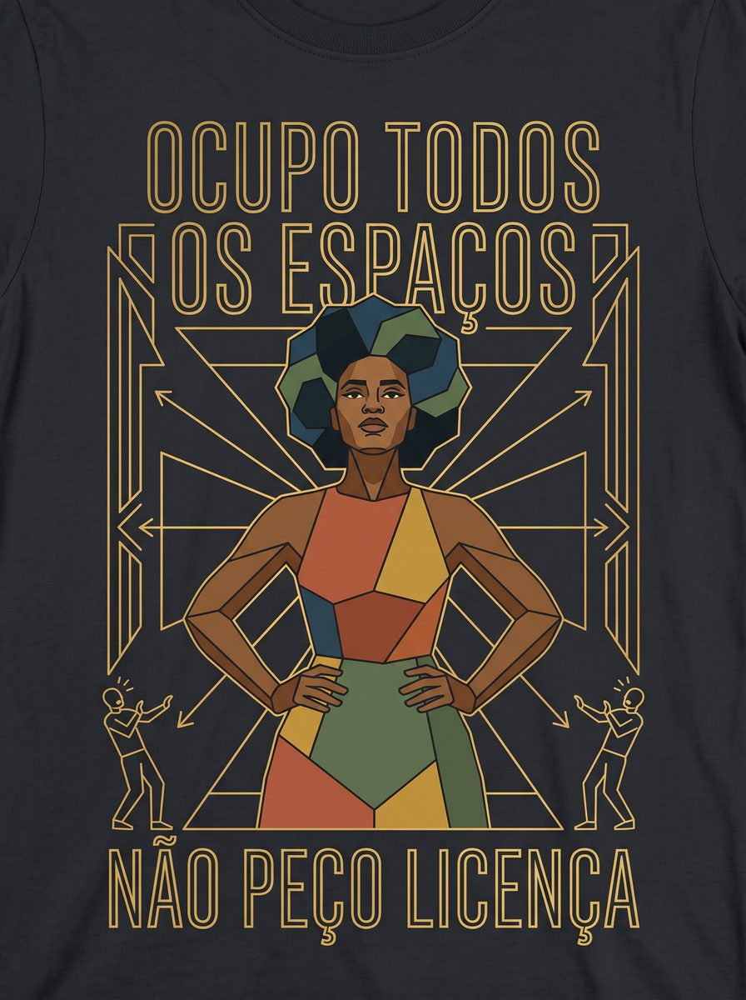
Ouro em contorno, figura geometrizada, cor restrita ao corpo. Os opositores aparecem menores, reagindo a ela.
Todos os elementos no lugar: a figura sobe e as objeções estão nos degraus.
Três níveis de especificação, mesmo modelo e mesma configuração. O que muda entre elas é o que eu coloquei no prompt. A terceira é a melhor das quatro saídas do nível mais detalhado, já com o ajuste de título curvo para reto que o modelo fez a pedido. As duas primeiras são saída crua.
O sistema
O sistema que ninguém tinha escrito
Em 2017, num trabalho do curso de Design Digital da UFC Quixadá, criamos o Laranjeira Deco, uma campanha para uma marca de estamparia chamada Te conheço, Laranjeira. Éramos seis: André Ágacy, Erisson Nunes, Juliana Barreto, Maria Carolina, Nathalia Pinto e eu. Três de nós ilustramos.
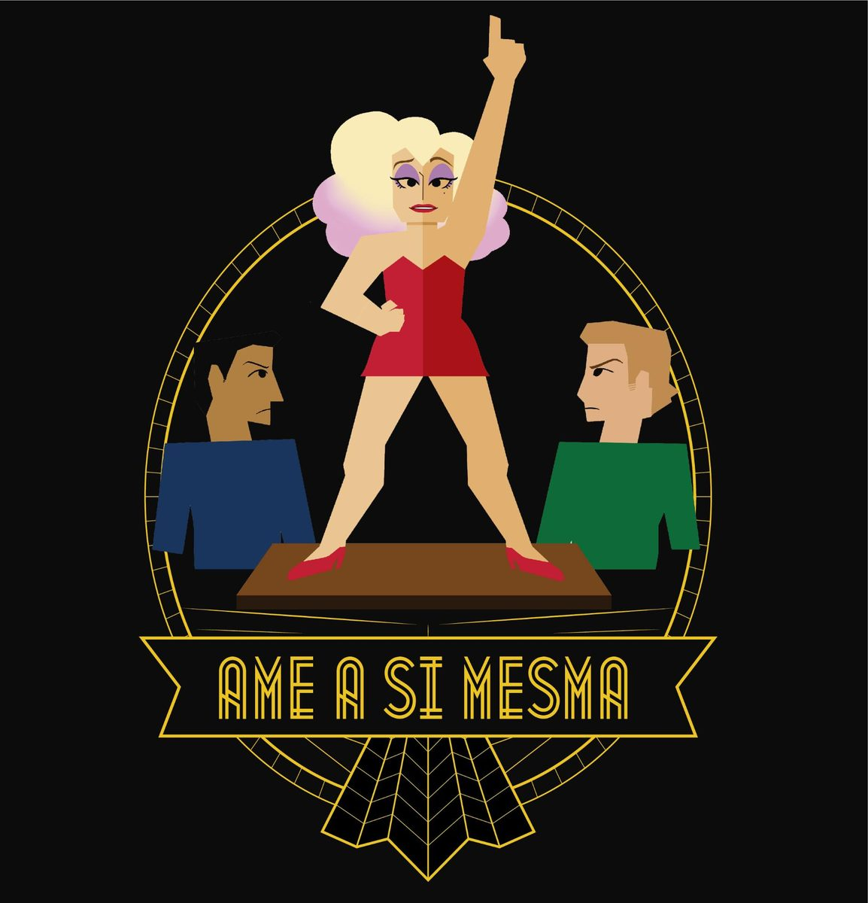
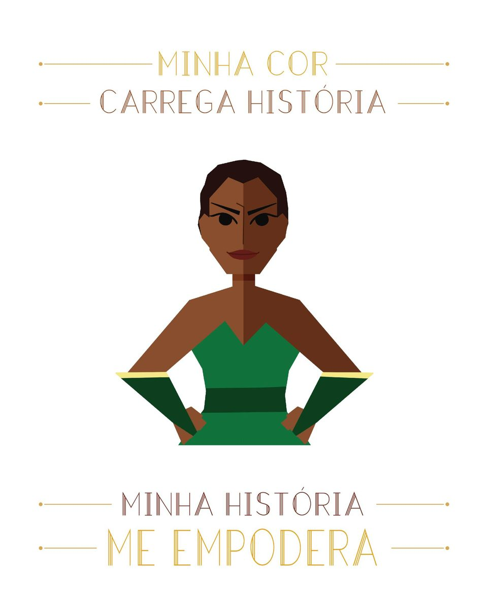
Quatro das peças da campanha, na escala relativa em que foram feitas. Três ilustradores diferentes, três famílias tipográficas diferentes. O projeto completo está publicado desde 2017 no Behance.
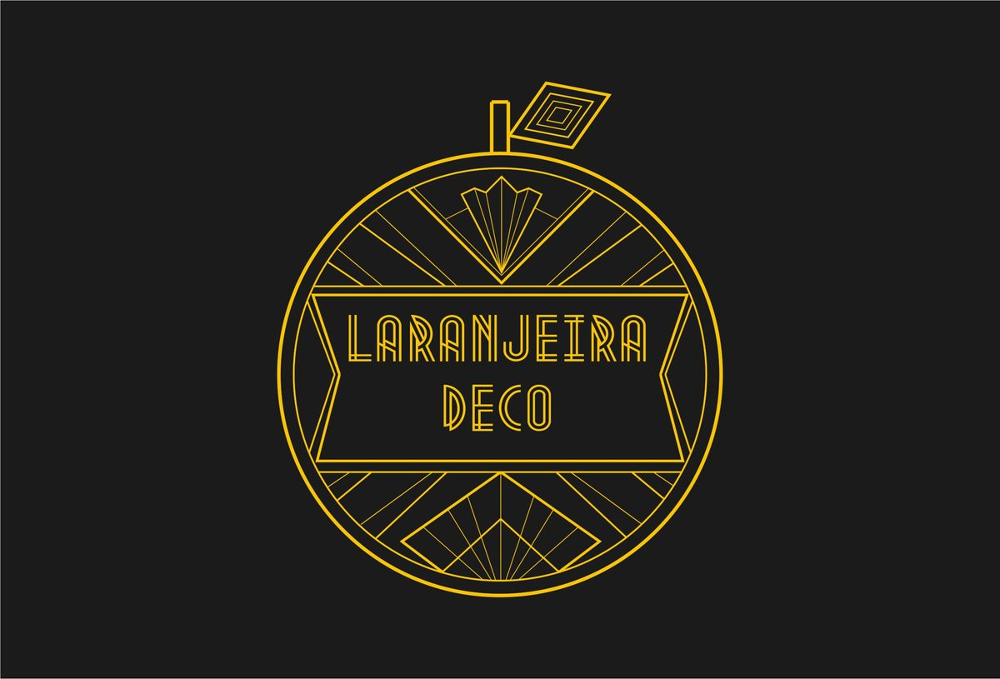
A marca segue as mesmas regras: contorno, ouro como estrutura, tipografia em caixa alta.
Três ilustradores diferentes, três famílias tipográficas diferentes: Decotech, Modern Deco e Stout Deco. E mesmo assim o conjunto lê como um sistema só. Nunca houve manual. A coerência vinha de regras que todo mundo seguia mas que não tínhamos escrito.
Nove anos depois, eu também não lembrava mais delas. Então sentei na frente das peças e escrevi o que via, sem consultar nada sobre o movimento, para tentar não enviesar demais minha leitura.
Datei e congelei antes de rodar qualquer coisa. Ela é o critério com que avaliei tudo que veio depois.
A minha leitura e a da máquina
Depois de congelar a lista, dei as mesmas peças para uma LLM (Claude Opus 5 Max) e pedi os princípios do sistema, sem dizer o que eu tinha escrito.
Ela viu quatro regras que eu não tinha nomeado.
E disse em uma frase o que eu tinha dito em duas regras separadas: a estrutura gráfica é monocromática mesmo quando a figura é policromática. É melhor que a minha formulação.
O que ela não viu foi o assunto. Em nenhum momento registrou que todas as peças falam de preconceito contra mulheres. Descreveu o mecanismo (crítica) com precisão e perdeu de quem a crítica era. Pelo critério dela, uma peça sobre preconceito contra imigrantes entraria no conjunto. Pelo meu, não.
O que a documentação de 2017 devolveu
Só depois de tudo pronto eu abri o artigo e os slides que a gente entregou na época.
As regras visuais não estavam lá. O que existe é o conceito de cada peça (o que cada uma queria dizer) e os artistas de referência. A gramática visual nunca foi escrita por nós.
Mas tinha uma frase que desmentia minha memória. Quando reconstruí o sistema, eu disse que a crítica social vinha do próprio Art Déco. O texto de 2017 diz o contrário, com todas as letras. Segundo ele, o Art Déco era:
"um movimento artístico meramente decorativo, sem nenhum significado além da beleza industrial"
A crítica foi adicionada pois esse era um dos princípios da Te conheço, Laranjeira! Está escrito, em 2017, que o movimento não tinha nada disso.
Em nove anos, essa decisão virou herança estilística na minha lembrança. O que se perdeu não foi a regra. Foi de onde ela vinha.
A documentação existia e estava completa no que se propunha. Ela registrou o que cada peça dizia e nunca por que ela era assim. Uma pessoa que já herdou um design system de outro time talvez já tenha sentido o mesmo.
O teste
Os três níveis
Rodei a mesma tarefa, criar uma estampa nova usando as regras, em três níveis de especificação, em outubro de 2026. Mesma plataforma (Gemini), mesmo modelo e mesma configuração (3.1 Pro Alto / Nano Banana 2), conversa limpa a cada vez.
Sem briefing
Ouro como massa, cenário atrás, nenhum texto.
Pedi "uma estampa para camiseta no estilo Art Déco" e nada mais.
Veio uma fênix dourada com skyline ao fundo, competente e vazia. Ouro aplicado como massa, com gradiente e brilho, o oposto da regra mais central do sistema. Nenhum texto, nenhuma figura humana, nenhum argumento e cenário atrás.
É o Art Déco de banco de imagens. Sem direção, o modelo foi para a média do rótulo.
Ver o prompt
Crie uma estampa para camiseta no estilo Art Déco.
Com as regras
Forma correta, argumento genérico.
Dei as regras do sistema, sem dizer sobre o que a peça deveria falar. O recorte era dela.
Acertou quase tudo da forma: ouro em contorno, figura geometrizada, cor restrita ao corpo, tipografia predominantemente caixa alta e vazada, texto ancorado no topo e na base, oposição menor e em reação. Minha previsão era que ela derivaria assim que saísse do que estava escrito. Não derivou.
O que faltou foi profundidade de argumento. "OCUPO TODOS OS ESPAÇOS" afirma de forma genérica. Fica perto da autoajuda, que é algo que tentamos evitar.
E aconteceu uma coisa que vale registrar: ela escolheu sozinha o recorte "ocupação de espaços" e escreveu NÃO PEÇO LICENÇA. O conceito que eu tinha congelado dias antes, sem ela ter acesso, dizia NINGUÉM ME DEU LICENÇA.
Não é telepatia. "Ocupação de espaços" estava na minha lista de princípios, e a metáfora de licença estava latente ali. Mas mostra até onde a especificação leva sozinha.
Ver o prompt
Crie uma estampa para camiseta de uma marca que segue estas regras: Traçado: formas geométricas básicas e linhas retas. O ornamento é sempre contorno, nunca massa preenchida. O mesmo tratamento vale para grafismo e para letra. Cor: dourado como cor dominante do ornamento e da tipografia, contra fundo de baixa saturação. A estrutura gráfica é monocromática. Cores fora dessa paleta aparecem apenas na figura — roupa, cabelo, pele — nunca no ornamento. Tipografia: caixa alta, traço fino e uniforme sem modulação, letra alta e estreita, terminais retos. Em parte das aplicações a letra é vazada, com linha interna acompanhando a haste. Ilustração: figura humana construída por geometrização — planos chapados, ângulos definidos, sem volume pictórico. Argumento: a peça carrega uma crítica, não um ornamento. A crítica é ao preconceito que mulheres enfrentam — sobre o corpo, a raça, a identidade, a ocupação de espaços. Forma do argumento: empoderamento, não sofrimento. A mulher visada pelo preconceito ocupa o centro, em afirmação. Se houver oposição representada, ela aparece menor, lateral, em reação. A peça nunca mostra a vítima como vítima. Escolha o recorte e componha a cena.
Com o conceito, primeira saída
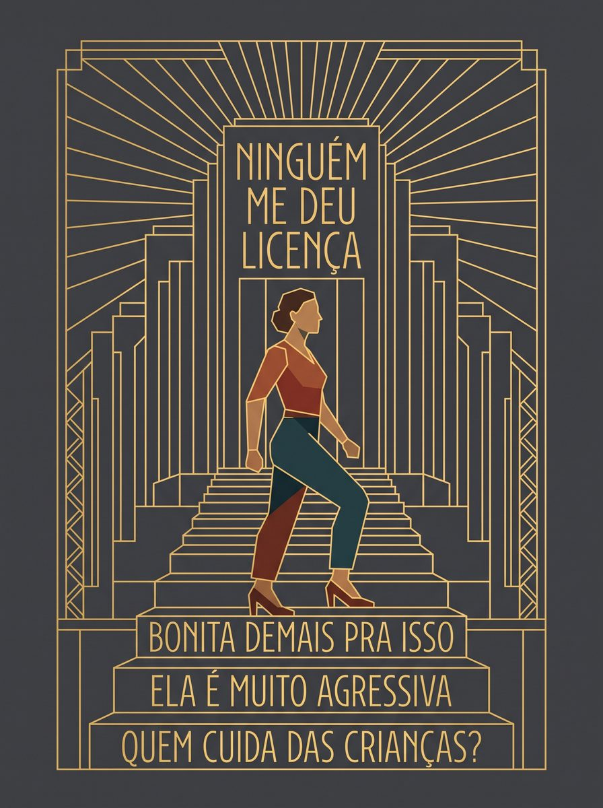
Todos os elementos no lugar, e a figura não sobe.
Aqui entreguei a peça resolvida: um edifício cívico Déco inventado, a escadaria em zigurate, a mulher subindo, as objeções escritas nos degraus: "QUEM CUIDA DAS CRIANÇAS?", "ELA É MUITO AGRESSIVA", "BONITA DEMAIS PRA ISSO". E no topo, "NINGUÉM ME DEU LICENÇA". As objeções são os degraus: ela pisa neles para subir.
Executou todos os elementos. E perdeu a subida: a figura caminha de lado, no mesmo degrau.
Não é erro de estilo. A subida é a tese da peça: ela pisa nas objeções para passar por cima delas. Andando na horizontal, a figura se move sem vencer nada.
E a direção estava escrita duas vezes no prompt, em palavras diferentes: "subindo a escadaria" e "ela pisa nelas para subir". Não foi ambiguidade do briefing. Qualquer designer lendo o mesmo texto não erraria isso.
Ver o prompt
As mesmas regras do segundo prompt, na íntegra, seguidas de:
A peça é esta: Cena: um edifício cívico Art Déco inventado, visto de frente. A massa escalonada em zigurate forma uma escadaria central. Filetes verticais finos nas laterais. Um sunburst abre atrás do topo. A arquitetura cria a moldura — sem borda desenhada ao redor. Figura: uma mulher ao centro, subindo a escadaria, em postura de afirmação e não de esforço. Texto nos degraus, de baixo para cima: QUEM CUIDA DAS CRIANÇAS? ELA É MUITO AGRESSIVA BONITA DEMAIS PRA ISSO Texto no topo: NINGUÉM ME DEU LICENÇA As objeções são os degraus: ela pisa nelas para subir. Não reproduza nenhum edifício real existente.
Quatro tentativas, duas certas
Rodei o mesmo prompt mais três vezes, em conversas independentes, para saber se a inversão era acaso ou viés.
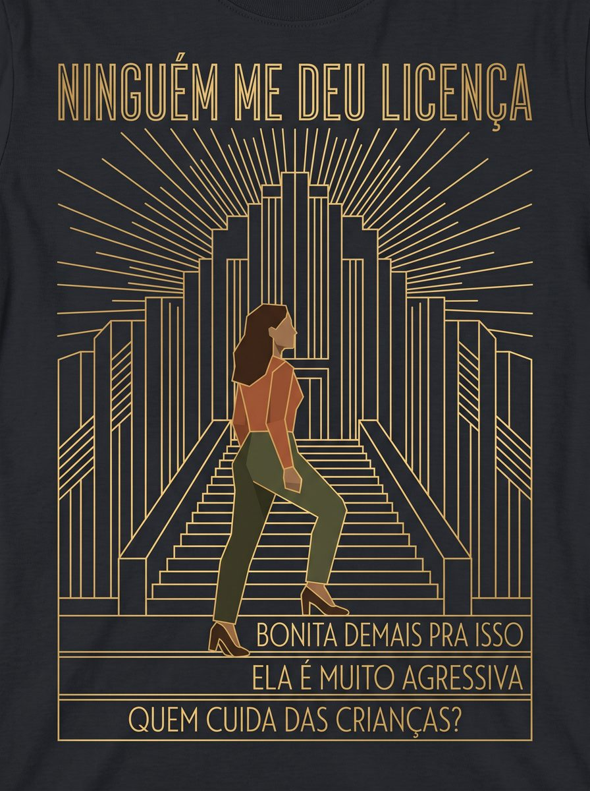
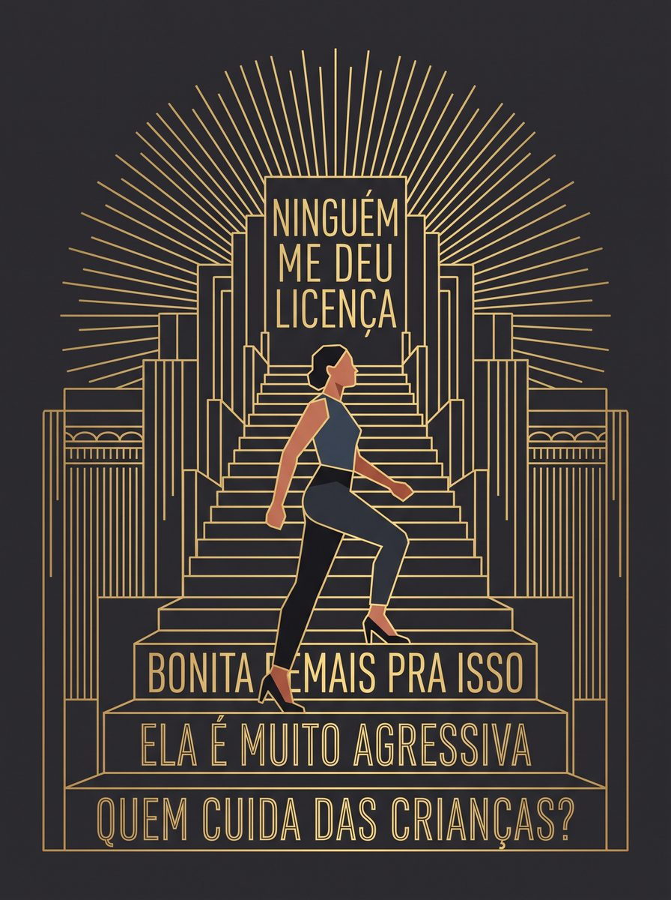
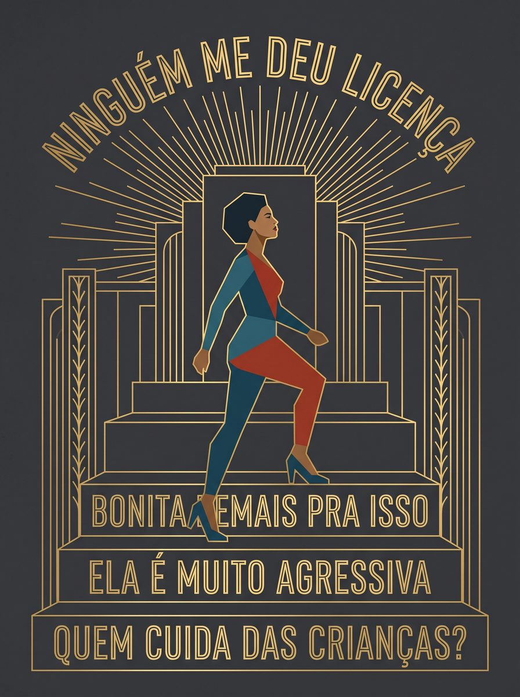
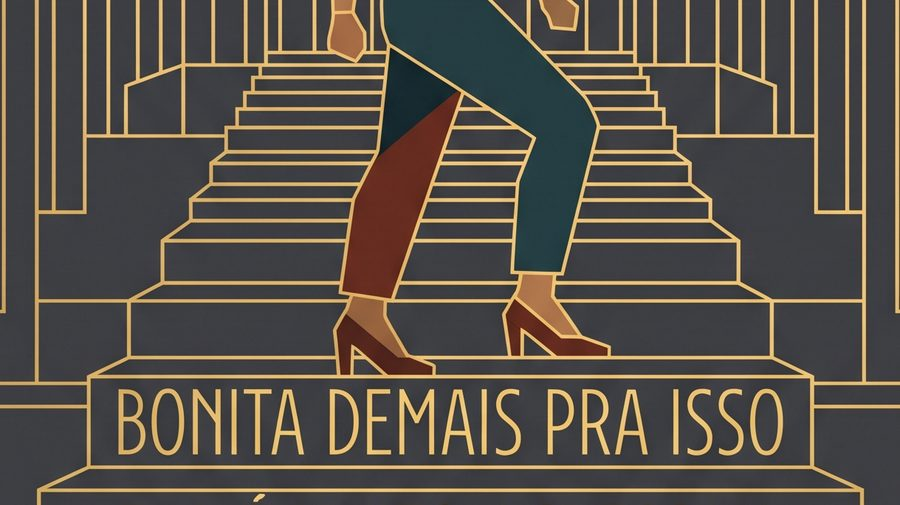
Os dois pés no mesmo degrau.
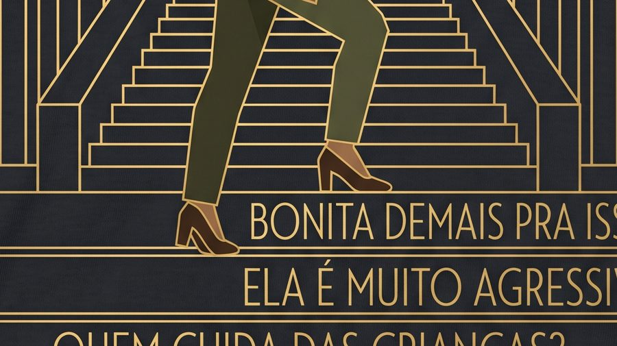
Sobe. Frases fora dos degraus.
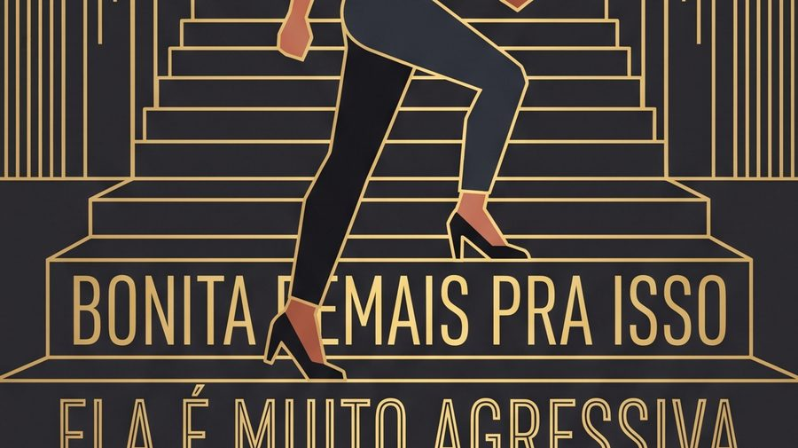
Sobe. Frase no degrau.
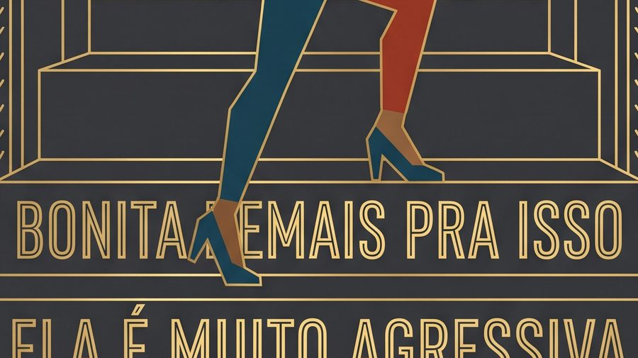
Sobe. Frase no degrau.
Segunda linha: recorte ampliado da escadaria de cada amostra.
| Amostra | Subindo | Objeções nos degraus |
|---|---|---|
| 1 | não | sim |
| 2 | sim | não |
| 3 | sim | sim |
| 4 | sim | sim |
Não era viés. A amostra 1 não subiu, caminhou de lado no mesmo degrau; a 2 subiu, mas largou as frases num bloco solto fora da escada. Cada uma acertou o que a outra errou.
O que isso mostra é mais específico que "a IA erra": o modelo trata direção, texto e degrau como elementos independentes a posicionar, não como uma ideia em que a posição de um depende do outro. A relação entre eles é o conceito. Em duas de quatro, coincidiu.
Quem decide qual das quatro presta é o designer, e esse critério não estava no prompt, nem poderia estar. Ele é a lista que escrevi antes, olhando as peças.
Onde ela parou
Peguei a melhor amostra e pedi dois ajustes de diagramação que eu já tinha identificado e resolvido no Photoshop em poucos minutos: igualar a largura da frase do topo à da linha de baixo, e abrir respiro entre o texto e o sunburst.
Falhou nos dois. A imagem voltou praticamente idêntica.
Antes disso, no mesmo arquivo, eu tinha pedido para endireitar um texto que estava em arco. Fez de primeira, sem quebrar nada em volta.
Título em arco.
"Curvo para reto". Feito de primeira.
"Mesma largura que", "mais espaço entre". Voltou idêntica.
A diferença entre os dois pedidos é o achado:
| Pedido | Natureza | Resultado |
|---|---|---|
| "curvo para reto" | mudar o estado de um elemento | de primeira |
| "mesma largura que", "mais espaço entre" | relação métrica entre elementos | falhou duas vezes |
O aprendizado não é entre pedidos fáceis e difíceis, é entre mudar o que uma coisa é e medir/posicionar uma coisa em relação a outra. É a mesma falha da amostra 2, em outra escala.
Não sinalizou limite, não disse que não conseguia. Quem não tem o critério para conferir aceita e segue.
O que fica
O que eu faço com isso
Três coisas que eu levaria para um time antes de massificar a utilização desse tipo de ferramenta, e uma que já mudei no meu próprio trabalho:
Não é possível avaliar o que sai se o que deveria sair não está escrito. A lista que fiz em duas horas é o que tornou o experimento inteiro legível. Sem ela, as quatro amostras são só quatro imagens parecidas.
Hierarquia, alinhamento, ritmo, qualquer coisa que dependa de medir uma parte contra outra. É aí que a ferramenta falha calada.
Nem para a máquina, nem para a equipe nova, nem para você mesmo daqui a nove anos. Um modelo que recebe só os artefatos reconstrói a forma com precisão e não reconstrói o motivo: a LLM leu as peças, nomeou quatro regras que eu não tinha visto e não registrou de quem era a crítica. A documentação de 2017 fez o mesmo movimento, sem máquina nenhuma. Quem mantém um design system em que a regra está nos componentes e o porquê está na cabeça de três pessoas está exatamente nessa posição.
Parei de pedir relação. Reposicionar um elemento em função de outro, igualar a medida de dois, abrir espaço entre duas coisas: resolvo fora do modelo, e uso o modelo só para o que ele muda de estado. É a primeira coisa que testo em qualquer ferramenta nova, antes de testar qualquer outra.
Os limites desse teste
Uma peça, um sistema, um modelo. Sem grupo de controle.
O que vi sobre relação entre elementos vale para o que testei: geração de imagem, um modelo, uma tarefa. Que isso se repita em outras superfícies é hipótese minha, não resultado daqui.
A construção de textos rodou num modelo e as imagens em outro, então não dá para falar de "a LLM" como se fosse uma coisa só.
Uma sexta peça, que ficou fora desta página, é a única das seis com volume pictórico em personagem por ser inspirada nas obras de Tamara de Lempicka. Ela contradiz uma das regras que escrevi, e quem lê aqui não tem como conferir isso. No entanto, optei por remover essa imagem do case por ela conter nudez.
E eu fui autor, executor e avaliador do mesmo experimento: escrevi o critério, rodei as peças e julguei o resultado. Registrei as predições antes de executar justamente para limitar isso, e duas das três se mostraram erradas, o que pelo menos indica que o teste tinha o que descobrir.
É um relato de prática, não um estudo.
Como usei IA neste trabalho
O experimento testa uma LLM e foi desenhado conversando com outra. Vale dizer isso com todas as letras.
O que foi meu: a leitura das peças, a lista de regras, o conceito da peça nova, a execução de todas as rodadas e o julgamento de cada resultado. O que criei junto da LLM de texto: a estruturação do método. O que deleguei: a primeira versão do texto desta página e a construção do site.
Inferências erradas que eu consegui documentar. Três vezes o modelo que me ajudava a analisar afirmou com segurança coisas que não tinha verificado. Apontou dois defeitos que não existiam nas peças geradas. E inventou uma contradição entre o que eu lembrava e o que a documentação de 2017 dizia, a partir de uma informação que o documento simplesmente não trazia.
Peguei as três porque tinha a lista de regras escrita antes e porque conheço o material.
É o mesmo mecanismo que esta página descreve, aparecendo na feitura dela.
A peça
A peça fechada: saída da amostra 4, com os dois ajustes de relação que o modelo não fez (largura do título igualada à linha de baixo, respiro entre o texto e o sunburst) resolvidos por mim no Photoshop.